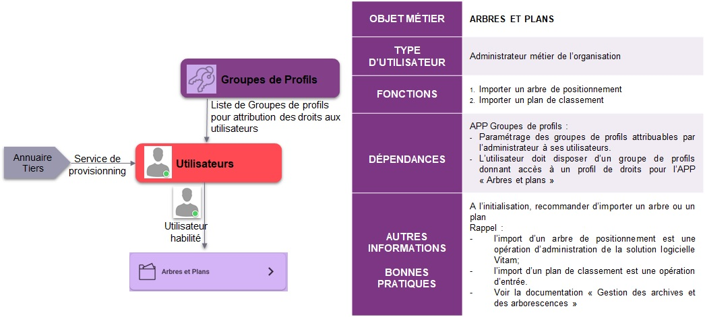

première approche
1. Guide de lecture de la documentation Vitam
2. Présentation du programme Vitam
documentation métier
1. Les éliminations avec la solution logicielle Vitam
2. Le gel d’archives avec la solution logicielle Vitam
3. Modèle de données
4. Description des workflows et des opérations
5. Module de collecte
6. Ontologie
documentation Vitam UI
1. APP Arbres et plans
1.1. Contexte et usage de l’APP
outils connexes
1. RESIP
Documentation utilisateur Vitam
1.
APP Arbres et plans
Afficher la source de la page
1.
APP Arbres et plans
1.1.
Contexte et usage de l’APP

Other Versions
v: v6_modify_index
Tags
v6.rc.1
Branches
master
master_6.rc.x
v5.0
Update_of_MDD_for_6.rc_version
master_5.x
update_index
update_of_workflow_model_for_6.rc_version
v6_modify_index
v6_test_branche_Alice
valeur_probante